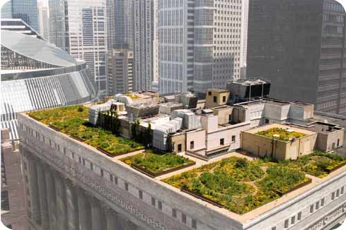

 |
|
When I was hired for my current job at the Fourth Presbyterian Church, this point was made abundantly clear. The human resources manager quoted my salary, detailed vacation time and, right after I signed my United Healthcare insurance forms, broke the news. The exchange went something like this: HR manager: “So I hear you're not Presbyterian.” At that point, my internal monologue started. I remember that when I interviewed for this job – each of the five separate times – I was assured personal faith choices were not a factor in the decision-making process. Me: “Um, no. Is that a problem? I was told that it wouldn't be a problem.” HR (now smiling) : “No, it's not a requirement for employment; I just thought I'd give you the heads up, you know, because Presbyterians believe that all non-Protestants are going to hell .” She's still smiling. The inherent contradiction in my interview process struck me as extremely poignant, given the church's new project: the creation of a community garden on the edge of Cabrini Green. The garden's ostensible purpose is noble , since it was meant to serve as a community meeting point, somewhere residents could gather and spend their time on a worthwhile pastime. A plot of land purchased by the church two years ago is currently occupied by a grid of tennis courts, which is a term I use loosely. I think the expanse of cracked asphalt littered with broken glass and Old Style cans may have once been used to play tennis, but I doubt it's seen a game anytime in the last 15 years. While the goal of a community garden is a great idea, I wondered about the universal appeal of an attraction located in one of the city's most infamous neighborhoods. However, the edge of Cabrini Green is not, surprisingly, the strangest place to find a garden in the city these days. In 2002, Chicago Mayor Richard Daley's push for rooftop gardens was a result of studies published citing the benefits of green space – rather than black tar – atop buildings. It's a temperature issue, since not only do the plants absorb carbon dioxide, which can act as an insulation blanket, but they also serve as a barrier to the hot, heat-reflecting tar roofs. The garden atop City Hall is the perfect example. The entirety of the roof's surface is now filled with shrubs, vines and even trees. The environmental benefits are numerous, and the city even offers tax breaks for any property owner with a rooftop garden. But that contradiction continues even in a document circulated by the mayor's office stating “a ‘rooftop garden' is presumed to mean it will be accessible to people,” which the City Hall garden is not. It's not open to the general public. You can't have everything , I suppose. Both projects should be lauded for what they purport to do, but neither affects both the public and the environmental spheres. The key is to get a few more gardens that fill both purposes – being both environmentally friendly and publicly accessible – around Chicago . I'd volunteer to work there. That may even prevent me from going to hell. |